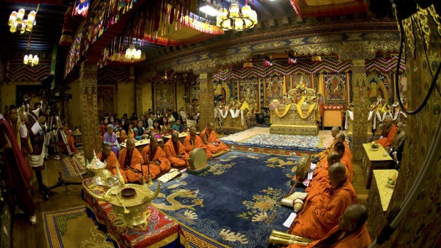
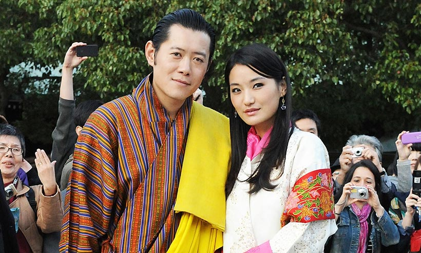
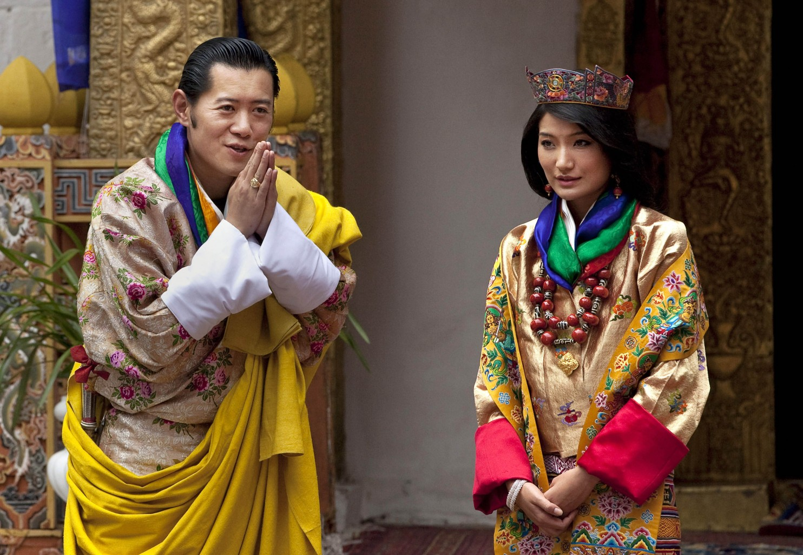
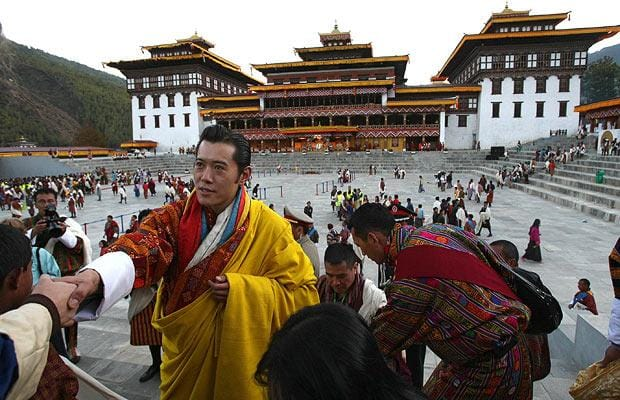

Government
The Government of Bhutan has been a constitutional monarchy since 18 July 2008. Between 1907 and the 1950s, however, Bhutan was an absolute monarchy. The peaceful march to democracy has been a steady one.[1] The King of Bhutan is head of state. Executive power is exercised by the Lhengye Zhungtshog, or council of ministers, headed by the Prime Minister. Legislative power is vested in the bicameral Parliament, both the upper National Council and the lower National Assembly. A royal edict issued on April 22, 2007 lifted the previous ban on political parties, ordering that they be created, in anticipation of National Assembly elections to be held the following year.[2] In 2008, Bhutan adopted its first modern Constitution, codifying the institutions of government and the legal framework for a democratic multi-party system.



